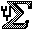
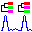
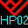

To go to top of Software page
Old Phylogeny Programs
(ones no longer distributed) |
The programs described in this web page were formerly listed in the
Phylogeny Programs web pages but are ones which are no longer
distributed. The entries describing them have been moved here. The
web links and ftp addresses in these listings typically do not work
any longer. It may be possible to track down the authors of these
packages and get information directly from them. I have added comments at
the top of some entries as to what I know about its status.
(This program is one that is still in distribution. It has been
removed from the list, not because there is anything wrong with it,
but because I have reconsidered where the boundary of this listing is.
As a data-conversion utility it lies outside it.)
Mauro J. Cavalcanti (maurobio (at) geocities.com), o
f
the Departamento de Biologia Geral, Universidade Santa Ursula, Rio de Janeiro,
Brazil, has written Tonex, a data set translation program for
converting Hennig86 data sets into
NEXUS format. It is available as MSDOS and Windows executables and as Turbo
Pascal 7.0 source code at its
web site at
http://www.geocities.com/RainForest/Vines/8695/software.html#Cladistics
.
Not sure this one has been in distribution any time in the last 10 years.
J. S. Farris and Mary Mickevich earlier released a
package of
phylogeny programs, PHYSYS, which, at about $5,000, was extremely expensive (in
my opinion, which is certainly a biased one). I am not sure whether, from
whom, or under what conditions it is still available.
Kevin Nixon has withdrawn ClaDOS: it is replaced by his more recent program
WINCLADA which incorporates the
features of ClaDOS and of another program, DADA.
ClaDOS, an interactive program which allow
s rearrangement of trees and
their evaluation, mapping of characters into them, and more, is available for
DOS systems from Kevin Nixon, L. H. Bailey Hortorium, Cornell University, 467
Mann Library, Ithaca, New York 14853. Rumor has it that the cost is in the
vicinity of $55 US.
I do not know whether these programs are being distributed right now, and
if so, from where. Zharkikh is now at Myriad Genetics in Salt Lake City, Utah.
Andrey Zharkikh (zharkikh (at) hgc6.sph.uth.tmc.edu
),
(then) of the Genetics Centers at the University of Texas at Houston,
has written a series of Unix programs to carry out various phylogeny methods.
They are easily compiled on standard Unix C compilers.
They include programs for
- Translating, reformatting and printing aligned sequences
- Calculation of evolutionary distances among sequences
- Inferring phylogenetic trees and bootstrapping, by parsimony or neighbor-joining distance methods
- Drawing the tree structure to a PostScript printer
These are available by
World Wide Web from
http://hgc6.sph.uth.tmc.edu:8080/bootstrap.dir/index.html or by
anonymous ftp from hgc6.sph.uth.tmc.edu in directory pub/zharkikh/bootstrap.
Lake is of course still at UCLA. I do not think this program is currently publicly distributed.
James Lake (lake (at) uclaue.mbi.ucla.edu)
distributes Evomony, a program for using the
"evolutionary parsimony" (invariants) method for inferring phylogenies from DNA
or RNA sequences. It runs on 286 or higher DOS systems with at least 500k
bytes of memory. A Macintosh version was also contemplated. I do not know what
the current distribution arrangements are. Lake's address is Department of
Biology, University of California, Los Angeles, California 90024.
There is no sign that Fujitsu still distributes this package, which is
a version of a phylogeny program called IDEN that is used at the National
Institute of Genetics, Japan (but is not in general distribution).
Fujitsu Ltd. ("a $21 billion [now it's 37.7 billion]
global leader in advanced computer,
telecommunications, and electronic devices") sells a Fujitsu S
family workstation complete with a program, SINCAIDEN, which allows
"experimental researchers, even those unfamiliar with such analyses, [to]
easily create phylogenetic trees in their own laboratories." The program also
allows searches of the major nucleic acid sequence and protein databases (the
ad I saw does not make it clear whether these databases are provided with the
workstation). The methods available are UPGMA, neighbor-joining, Farris's
(Distance Wagner) and the modified Farris distance matrix methods. The
workstation is SPARC compatible and runs SunOS. The SINCAIDEN program was
developed by the group at the National Institute of Genetics, Japan under Dr.
Takashi Gojobori. Fujitsu Ltd. may be contacted at 21-8, Nishi-Shinbashi 3-
chome, Minato-ku, Tokyo 105, Japan (phone 81-3-3437-5111 ext. 2831, fax 81-3-
5472-4354), or in the U.S. at Fujitsu America Inc., 3055 Orchard Drive, San
Jose, California 95134-2017 (phone 1-408-432-1300 ext. 5168, fax 1-408-434-
1045).
There is a web page in Japanese
at http://sinca.fqs.co.jp/InfoSINCA/.
Several years ago the price of SINCAIDEN (with workstation) was $28,000.
This teaching program seems no longer to be in distribution (it is not clear
that its author decided this).
Arnold G. Kluge (akluge (at) umich.edu), of the
Department of Biology of the University of Michigan, has written
Systack, a teaching program designed to teach the
principles of synapomorphy/homology analysis in the context of chordate
phylogeny. It implements a hierarchical filing system in the form of a
phylogeny, with character information available on chordates and with users
able to add new characters. It is a Hypercard stack for Macintosh computers,
and is available free for noncommercial use.
A Web site is
available at http://www.ummz.lsa.umich.edu/herps/systack.html to
download it.
This program has been withdrawn because it is now contained within
their later system vCEBL.
Allen Rodrigo of the Computational and Evolutionary
Biology Laboratory, School of Biological Sciences, University of Auckland,
Auckland, New Zealand (a.rodrigo (at) auckland.ac.nz) distributes
sUPGMA (Serial sample UPGMA). It reconstructs
evolutionary histories/genealogies under the assumption of a molecular
clock when sequences are obtained serially in time. Input is a
distance matrix. sUPGMA can also carry out the ordinary UPGMA,
WGPMA and Neighbor-Joining methods. sUPGMA is a
Java applet. It is available for downloading
from
its web site at
http://www.cebl.auckland.ac.nz/">
or for use as a server.
sUPGMA runs under Netscape Communicator 4.7 or Microsoft Internet
Explorer 5 on PCs running Windows 95/98, and Microsoft Internet Explorer
4.5 on Macintoshes. It can also be run in standalone mode if you have
a Java runtime engine.
Andrew Rambaut has retired SPOT as he considers it obsolete in view
of the features of PAUP*.
Andrew Rambaut of the Department of
Zoology, University of Oxford, (andrew.rambaut (at) zoo.ox.ac.uk) and
Nick Grassly, currently of the Zoologisches Institut, Universität
München
(grassly (at) zi.biologie.uni-muenchen.de),
have written SPOT (Sequence Parameters Of Trees).
SPOT is a program that will calculate the likelihood of a given tree topology
for a set of aligned nucleotide sequences. For each topology, SPOT will
estimate the maximum likelihood values of branch lengths and other parameters
of the model of nucleotide evolution that has been chosen. Such parameters
include the ratio of transitions to transversions (TS/TV ratio) and relative
rates of substitution at different codon positions. Branch lengths can also
be constrained to assume a molecular clock hypothesis. Multiple datasets
and multiple trees can be analysed which is useful for performing Monte
Carlo simulations of hypothesis (parametric bootstraps). Although SPOT does
not estimate tree topology, an accompanying program, SPOTSHELL, will iterate
between fastDNAml and SPOT until the maximum likelihood parameters and topology
has been found (or at least something close to it).
SPOT is available as C source code for Unix workstations, or as Macintosh sources and
executables.
It can be obtained from the
SPOT Web page
at http://evolve.zoo.ox.ac.uk/Spot/Spot.html.
Lyons-Weiler has moved to the University of Pittsburgh. I suspect that
RASA will be made available there in the near future.

James Lyons-Weiler of the Biological Sciences Department
of the University of Massachusetts, Lowell
(James_LyonsWeiler (at) UML.EDU) has written RASA,
version 2.5, software for Macintoshes that will perform "Relative Apparent
Synapomorphy Analysis", a test for the presence of phylogenetic signal
in any type of discrete character data matrix (morphological or
molecular). The RASA program carries out the test and plots the results.
RASA is menu-driven. The test compares
the observed and null rates of increase in cladistic similarity
among pairs of taxa predicted by an increase in the phenetic
similarity among taxon pairs.
The test is described in a paper:
Lyons-Weiler, J., G.A. Hoelzer, and R.J. Tausch. 1996. Relative Apparent
Synapomorphy Analysis (RASA) I: the statistical measurement of
phylogenetic signal. Molecular Biology and Evolution 13:
749-757, the taxon variance plot tool in RASA was described in the
paper: Lyons-Weiler, J., and G.A. Hoelzer. 1997. Escaping from the
Felsenstein Zone by detecting long branches in phylogenetic data.
Molecular Phylogenetics and Evolution 8: 375-384, and
outgroup selection issues were discussed in
Lyons-Weiler, J., G. A. Hoelzer and R. J. Tausch. 1998.
Optimal outgroup analysis. Biological Journal of the Linnean
Society 64: 493-511.
The programs are available as Macintosh executables from
their web page at
http://bio.uml.edu/LW/RASA.html.
There does not seem to be any web site for either this program or
its author.
Tiago Ramos of the Museu de Zoologia,
Universidade de Sao Paulo, Sao Paulo, Brazil
(tcramos (at) ibm.net)
has developed Tree Gardener version 2.2.1, a shell to run
Hennig86 interactively on Windows systems.
The program allows the user to edit data files, submit jobs, including
successive weighting runs, rerooting, and consensus trees. It displays the
resulting trees and allows the user to edit them. It is freely available
provided that the user has a registered copy of Hennig86.
Tree Gardener is available from the Digital Taxonomy
web site at
http://www.geocities.com/RainForest/Vines/8695/software.html#Cladistics.
Black is still at Colorado State but seems to have ceased ftp distribution of BIOSYS-2
William C. Black
of the Department of Microbiology, Colorado State University
(wcb4 (at) lamar.colostate.edu
) makes available BIOSYS-2. This is a modified
version of David Swofford and Richard B. Selander's 1981 program BIOSYS-1,
adding some features. Swofford's program was originally distributed by the
Illinois Natural History Survey but has not been in distribution for
some years -- this is the only version in distribution. Although
in many respects it has been superseded by other population genetics
packages (such as the ones that follow this listing) it computes
gene frequencies, linkage disequilibria, and many other population
genetics analyses on electrophoretic genotypes. For our purposes,
it is most relevant to note that it can compute the genetic distances
of Nei (unbiased distance), Rogers, and Cavalli-Sforza. It can
also carry out UPGMA, WPGMA, Complete Linkage, and Single Linkage
clustering of populations (inferrring clocklike phylogenies), or infer
nonclocklike phylogenies by Farris's
Distance Wagner method. Black has added the capabilities of
making bootstrap replicates of the genetic distances and writing them
out in PHYLIP format.
BIOSYS-2 is available as a DOS executable with documentation and
FORTRAN source code. It is distributed by ftp from
lamar.colostate.edu in directory pub/wcb4.
Rambaut has discontinued distribution of End-Epi, as its features are
replaced by the latest versions of Pybus and Rambaut's program Genie
![[End-Epi icon here]](icons/end-epi.gif) Andrew Rambaut of the Department of Zoology,
University of Oxford, (
Andrew Rambaut of the Department of Zoology,
University of Oxford, (andrew.rambaut (at) zoo.ox.ac.uk)
has written End-Epi (Endemic-Epidemic) version 1.0,
a program to examine trees to assess relative cladogenesis (whether
there is evidence that one clade has speciated more than another),
and make lineages-through-time plots, with the objective of discovering
whether the rate of speciation has been constant through time ("endemic")
or has been higher initially ("epidemic").
Rambaut considers that the methods in End-Epi have since been superseded
by those in his and Oliver Pybus's program Genie.
End-Epi is available free for Macintoshes with system 7.0 or later
from its
Web page at
http://evolve.zoo.ox.ac.uk/software/End-Epi/End-Epi.html
or by ftp from
evolve.zoo.ox.ac.uk in directory packages as
file End-Epi10.hqx. However the Macintosh executable will
not work with operating systems later than version 7.5, unless you
switch off Modern Memory Manager in the control panel first.
George is still at the University of Michigan but the web page distributing this program has disappeared
George Estabrook of the Department of
Biology, University of Michigan, Ann Arbor, Michigan
(Estabrook (at) umich.edu) has written
QUARTET2, which
calculates measures of difference between phylogenies
based on quartets (subtrees of four tips).
The methods are described in a paper:
Estabrook, G. F. 1992.
Evaluating undirected positional congruence of individual taxa between two
estimates of the phylogenetic tree for a group of taxa.
Systematic Biology 41: 172-177.
QUARTET2 is available as a DOS executable from his
web page of computer programs
at http://www-personal.umich.edu/~gfred/.
George is still at the University of Michigan but the web page distributing this program has disappeared
George Estabrook of the Department of Biology of the
University of Michigan, Ann Arbor, Michigan (gfred (at) umich.edu)
distributes MEAWILK (MEAcham and WILKinson criteria)
which uses a randomization test to evaluates support from character data for
hypothesized monophyletic
groups It uses criteria published by Christopher Meacham (1994. Phylogenetic
relationships at the basal radiation of angiosperms: Further study by probability
of character compatibility. Systematic Zoology 19:
506-522)
by Mark Wilkinson (1998. Split support and split conflict randomization tests
in phylogenetic inference. Systematic Biology 47: 673-695). MEAWILK is
a DOS executable distributed from Estabrook's programs web site at
http://www-personal.umich.edu/~gfred/.
MARKOV seems to no longer be available as a program. A web server
service for it was announced, but there is no response when I try it.
The program MARKOV, by Graziano Pesole
of the University of Milan (graziano.pesole (at) unimi.it)
and Professor Cecilia Saccone of the University of Bari, Italy,
computes a distance measure between pairs of
nucleotide sequences. It also constructs phylogenies from these and summarizes
the 4x4 substitution matrices between the pairs of species. It uses a more
general model of substitution than used in PHYLIP, the Stationary Markov Model
published by Lanave et al. in Journal of Molecular Evolution 20:
86-93 in 1984. This is also
described in the paper by Saccone et. al. in Methods in Enzymology volume 183,
pages 570-583, 1990. It is often known as the General Time Reversible model.
Bootstrapping is used to analyze the statistical error of
the results. Output files from CLUSTAL and PILEUP, as well as some other
formats, can be used for input, and analysis can be confined to certain codon
positions in coding sequences. The program is written in ANSI C and runs on
Unix systems. A Web page server is also available at
http://bigarea.area.ba.cnr.it:8000/EmbIT/coda_markov.html.
Salisbury says that as he is no longer in academia he no longer has time to
distribute this program. His recent email address is b.salisbury (at) genaissance.com
Benjamin Salisbury (ben (at) aya.yale.edu),
of the Department of Ecology and Evolutionary Biology, Yale University
has released SECANT version 2.2,
based on an earlier program, CLINCH, by Kent Fiala, now of SAS Institute.
SECANT was previously known as CLINCH2.
It is probably the most sophisticated
compatibility analysis (clique analysis) program, capable of handling
unordered multiple states. It can also group characters by Salisbury's own
Strongest Evidence criterion.
It and its criteria are described in a paper: Salisbury, B. A. 1999. Strongest
evidence in compatibility: clique and tree evaluation using apparent
phylogenetic signal. Taxon 48: 755-766.
SECANT is available as a Windows95/NT executable,
and its source code is described as available on request.
It is available from
its web page
at http://jkim.eeb.yale.edu/salisbur/.
Bailey Kessing has moved to Maryland and for the moment there seems to
be no web or ftp distribution of this program
Bailey Kessing of the Smithsonian Tropical
Research Institute, Panama (BaileyKessing (at) email.com)
has
released Sequencer on 6.1.0, a multipurpose program for
manipulating
and analysing data. It can calculate many kinds of statistics, but for
the purposes of this listing, its important features are the ability to
calculate variety of distances from DNA and protein sequence data.
Distances for DNA sequence data include Jukes-Cantor, Kimura's 2 parameter
model, and computation of synonymous and nonsynonymous substitutions
using Kimura's 2 parameter model. It can also bootstrap distance
calculations. It is available as Macintosh executables (both PowerPC and
non-PowerPC executables are available) from
its web site at
http://nmg.si.edu/Sequencer.html.
Black is still at Colorado State University but seems to have discontinued distribution of this package
William C. Black
of the Department of Microbiology, Colorado State University
(wcb4 (at) lamar.colostate.edu)
has produced PROGRAMS FOR ANALYSIS OF RAPD-PCR DATA.
There are 7 programs. The ones relevant to this listing are
- RAPDPLOT which computes distances between RAPD patterns using
either Nei and Li's distance or a percent difference score,
- RAPDBOOT which makes these distance matrices in while bootstrap
sampling the data set, and
- RAPDBIOS which converts the RAPD data into a gene frequency
dataset for analysis by BIOSYS-2.
(Black's site is also the distribution site for BIOSYS-2).
Other programs compute FST and linkage disequilibria from
RAPD data.
The programs are in FORTRAN source code with DOS executables.
They are distributed by ftp from lamar.colostate.edu
in directory pub/wcb4 as file RAPDS.ZIP.
This program seems to not be distributed any longer. A recent email
address for Salisbury is b.salisbury (at) genaissance.com. The
Kim lab is now at the University of Pennsylvania but does not have this
program available at their web site.
Ben Salisbury
(ben (at) aya.yale.edu) of the
Department of Ecology and Evolutionary Biology, Yale University, New
Haven, Connecticut, has released DNASEP, which uses
(with permission) some code from my
PHYLIP program DNAPARS to carry out
Salisbury's criterion of Strongest Evidence Parsimony. The criterion
is described in a paper: Salisbury, B. A. 1999. Strongest evidence:
maximum apparent phylogenetic signal as a new cladistic
optimality criterion. Cladistics 15: 137-149.
DNASEP is available as a Windows95 executable from
Salisbury's web site at
http://jkim.eeb.yale.edu/salisbur/. It has been partially
superseded by a later program of Salisbury's,
SEPAL, which has more functions.
This program seems to not be distributed any longer. A recent email
address for Salisbury is b.salisbury (at) genaissance.com. The
Kim lab is now at the University of Pennsylvania but does not have this
program available at their web site.
Ben Salisbury
(ben (at) aya.yale.edu) of the
Department of Ecology and Evolutionary Biology, Yale University, New
Haven, Connecticut, has written SEPAL, version 1.01, which
can search for the trees that maximize the Strongest
Evidence criterion, Apparent Phylogenetic Signal.
It can also do Iterative SE, parsimony, and parsimony
jackknifing. It can also calculate decay values (Bremer supports) for either
parsimony or Strongest Evidence. It also has some options for removing
characters that are particularly noisy. The criterion
is described in a paper: Salisbury, B. A. 1999. Strongest evidence:
maximum apparent phylogenetic signal as a new cladistic
optimality criterion. Cladistics 15: 137-149.
SEPAL is available as a Windows95 executable from
Salisbury's web site at
http://jkim.eeb.yale.edu/salisbur/.
Belyi is no longer at Penn State and his program is not in distribution.
His email address currently seems to
be sambauser (at) katehok.ac93.org.
Igor Belyi (Igor_Belyi (at) transarc.com)
has developed TreePack,
a minimum evolution program for Unix workstations.
TreePack can be obtained by ftp
from ftp.cse.psu.edu in directory pub/belyi.
It is available as Unix source code in C.
The ftp distribution of QR2 seems to have become nonfunctional. Gascuel
is still at this email address, and the Institut Pasteur server for this
program is still functional.
Olivier Gascuel and Denise Levy
(gascuel (at) lirmm.fr) at the
the Laboratoire d'Informatique, de Robotique et de Micro-Electronique de
Montpellier (LIRMM) of the Universite de Montpellier II, France
have produced
QR2 version 1.0, a program which approximates a dissimilarity
(or distance) matrix by a tree. The method is described in a paper:
Gascuel, O. and D. Levy. 1996. A reduction algorithm for approximating a
(nonmetric) dissimilarity by a tree distance. Journal of
Classification 13: 129-155. The program is available
in C++ source code
by ftp from lirmm.lirmm.fr in directory
pub/genome/phylo. It is also available as
a server from the Institut Pasteur.
Posada is in Vigo at the email address indicated, but his software
site there no longer includes this program.
David Posada (dposada (at) uvigo.es)
of the University of Vigo, Spain
has produced MATRIX version 1.5, a program to calculate a matrix of pairwise
distances (treating gaps as a fifth state by
default): for absolute, uncorrected, JC69 and K80 distances from a set of
aligned DNA sequences in PHYLIP sequential or NEXUS format.
It is available as a Macintosh executable from
its web site at
http://bioag.byu.edu/zoology/crandall_lab/programs.htm.
Salminen is currently at the National Public Health Institute in
Helsinki, Finland. His email address is mika.salminen (at) ktl.fi,
but he does not seem have the Bootscanning Package currently available
anywhere.
Mika Salminen and Wayne Cobb (msalminen (at) hiv.hjf.org and wcobb (at) reed.hjf.org), of the Henry M. Jackson
Foundations for the Advancement of Military Medicine, Walter Reed Army
Institite of Research, Bethesda, Maryland, have released the
Bootscanning Package, version 1.0beta. This is a series
of shell scripts and programs that analyze DNA sequences for evidence of
recombination. It breaks the sequence into separate pieces that are
analyzed for the bootstrap support of various groups, and it looks for
evidence of significant conflict among trees for different parts of the
sequence. The programs are currently available only as Sun executables.
They require GDE 2.2a and
PHYLIP version 3.4 to work.
They are available by anonymous ftp from from
http://www.ktl.fi in directory /hiv/mirrors/pub/programs.
Zharkikh and Rzhetsky are respectively, with Myriad Genetics in
Utah, and Columbia University Genome Center. VOSTORG does not
seem to be distributed anywhere.
Andrey A. Zharkikh, Andrey Rzhetsky, and co-workers in the
Institute of Cytology and Genetics, Siberian Branch of the Russian Academy of
Sciences, Novosibirsk, Russia, have produced VOSTORG, a package of
programs for alignment (both manual and automatic) and inferring phylogenies by
distance methods and parsimony for molecular sequences.
(Zharkikh and Rzhetsky are currently in the US; their e-mail addresses are
zharkikh (at) myriad.com and andrey (at) genome2.cpmc.columbia.edu). VOSTORG runs on under DOS on
PC-compatibles and includes some rather fancy graphics (for DOS).
It is available from
its Web page in Russia
from http://molevol.bionet.nsc.ru/vs.htm.
The programs are described in a paper: Zharkikh, A. A., A-Yu. Rzhetsky,
P. S. Morosov, T. L. Sitnikova, and J. S. Krushkal. 1991. VOSTORG: a package of
microcomputer programs for sequence analysis and construction of phylogenetic
trees. Gene 101: 251-254.
Fitch is still at this address but the programs do not seem to be currently distributed.
Walter Fitch (wfitch (at) uci.edu), of the Department
of Ecology and Evolutionary Biology, of the University of California at
Irvine, has available by anonymous ftp at daedalus.bio.uci.edu in
directory pub/outgoing/evoprog about 20 programs
which carry out various kinds of phylogeny estimation and related tasks.
They are available in source code in FORTRAN 77,
(except for a few which are in C) and also as Sun SPARC executables and as
DOS executables. They include:
- ANCESTOR which searches for most parsimonious trees
for nucleotide or protein sequences,
- EVOLVES which carries out the original Fitch-Margoliash
distance matrix method,
- WTDPARS, programs for weighted parsimony analysis
according to the methods he has introduced in the papers by P. L. Williams and
W. M. Fitch, in pages 453-470 of the Nobel Symposium on the Heirarchy of
Life, edited by B. Fernholm, K. Bremer, and H. Jornval, Elsevier, 1989,
and the paper by P. L. Williams and W. M. Fitch, in
Advances in Enzymology, volume 183, pages 615-625, 1990.
There are also many programs that convert sequences among various formats,
generate all possible trees, shuffle sequences, align sequences, and do
various other functions.
The programs are available
by anonymous ftp
from daedalus.bio.uci.edu in directory
pub/outgoing/evoprog.
There is also TDRAW which draws a tree in Postscript. This
program is in C, and is not available as a DOS executable.
It is available
in directory pub/outgoing/tdraw.
Kay Nieselt-Struwe is currently at the Zentrum für Bioinformatik Tübingen, Germany, but she does not make this program available from there.
Kay Nieselt-Struwe (kns (at) phy.auckland.ac.nz) of the
Department of Physics of the University of Auckland, New Zealand has released
version 1.0 of STATGEOM.
It carries out computation of the statistical geometry in distance and in
sequence space of a set of aligned DNA/RNA, amino acid or binary sequences.
The user can decide to
either compute the overall tree-likeness of the whole set, or a
certain subset, or given a tree of the sequences compute the
reliability of certain edges in the tree.
Postscript files of the graphs of the
statistical geometry are automatically generated.
A sequence reformatting utility allow various sequence formats to be
read in.
STATGEOM is written in ANSI C; source code with documentation and a Sun SPARC executable are
available by anonymous ftp at cage.mpibpc.gwdg.de (or 134.76.209.64) in directory
pub/kniesel.
The method of statistical geometry was originally published in:
Eigen, M., Winkler-Oswatitsch, R. and Dress, A. 1988.
Statistical geometry in sequence space: a method of comparative
sequence analysis. Proc. Natl. Acad. Sci. USA 85: 5913-5917.
There is no sign that this program is still available
Hang-Kwang Luh, John Gittleman, and Mark Kot of the University
of Tennessee at Knoxville have made available PA, a
package of Macintosh programs that implement the phylogenetic autocorrelation
comparative method introduced by Gittleman and Kot ( Systematic Zoology , 1990). It is free and is available
by anonymous ftp from ftp.math.utk.edu in directory pub/luh.
Blomberg has moved to Sydney, and I do not know whether this program
is currently distributed anywhere.
Simon Blomberg, of the School of Botany and Zoology
of the Australian National University, Canberra
(S.Blomberg (at) anu.edu.au) has announced the
beta-release of a small comparative method program, Fels-Rand
version 0.91beta
[look folks, don't blame me, I had nothing to do with naming this program].
It is designed to analyse data when the phylogeny is only poorly known, as
when there is one or several polytomies. The program is said to be
inspired by a 1994 paper in Systematic Biology by Jonathan Losos.
It retains known tree topology and randomises the unknown parts of the tree,
unlike some other programs, which randomize the whole tree. The statistics
are calculated on independent contrasts from fully (randomly) resolved trees.
Fels-rand is written in XLISP-STAT, and runs in the XLISP-STAT environment
(in other words you first must get and install XLISP-STAT on your computer
to run the code, which is written in the XLISP-STAT language).
XLISP-STAT is available for Macintosh, Windows, and Unix.
Fels-rand is available from
Blomberg's home page at http://dingo.cc.uq.edu.au/~ansblomb/. Its README file can be found
in a newsgroup posting at
http://life.biology.mcmaster.ca/~brian/evoldir/Other/ComparativeMethod.software.
Dopazo is now at the Centro Nacional de Investigaciones Ocológicas (jdopazo (at) cnio.es. He appears not to have ABLE in distribution at this time.
Joaquin Dopazo of the R&D Department of TDI (TDI-EMBNet),
Spain, (dopazo (at) samba.cnb.uam.es) has written
a program ABLE (Analysis of Branch Length Errors) which
implements the method described by Adell and Dopazo in J. Mol. Evol. 38: 305-309
(1994). This is a parametric bootstrap test of constancy in evolutionary
rates. The idea of the test is to simulate a large number of a data sets
under the model of rate constancy and then to examine the distribution of
the branch lengths. After, a tree is reconstructed
without the constraint of rate constancy it can be checked whether the
observed branch length values fall within the expected distribution.
The program is intended for use with the PHYLIP programs FITCH and KITSCH.
It is available as a DOS executable from
Dopazo's software web page at
http://www.cnb.uam.es/~bioinfo/Software/Ximo/www1.html
or by anonymous ftp at: ftp.cnb.uam.es
in directory pub/cnb/molevol.
Dopazo is now at the Centro Nacional de Investigaciones Ocológicas (jdopazo (at) cnio.es. He appears not to have SOTA in distribution at this time. There is a never-completed web page there for it but it is not
distributed from that page. A modified version is available for clustering
genes for gene expression.
Joaquin Dopazo and J. M. Carazo (
jd19662 (at) ggr.co.uk
and carazo (at) embnet.cnb.uam.es) have produced
SOTA, a package to carry out the Self Organizing Tree Algorithm.
It is based on Kohonen's unsupervised
neural network of self-organizing maps and on Fritzke's growthing cell
structures algorithm to construct phylogenetic trees from biological
molecular sequence data. It is described in a paper:
Dopazo, J. and J. M. Carazo. 1997. Phylogenetic reconstruction using an
unsupervised growing neural network that adopts the topology
of a phylogenetic tree. Journal of Molecular Evolution
44a: 226-233. SOTA can use sequence data, distance matrix data,
or dipeptide frequencies from proteins.
SOTA is available as source code in C for Unix,
as executables for SGI workstations, and also with a Windows program
called Drawer that draws the resulting trees. The package with
documentation is available by anonymous ftp from
ftp.cnb.uam.es in directory cnb/sota.
Ken is at the address below but as far as I can tell does not make RSVP
available any longer.
Ken Rice
(ken_a_rice (at) gsk.com) of
GlaxoSmithKline Beecham, Upper Merion, Pennsylvania (and adjunct faculty at the
University of Pennsylvania)
has produced RSVP (restriction site variability program)
which calculates several measures of genetic variability based on restriction
map data. It also produces Jukes-Cantor corrected distance matrices with
standard errors from collections of restriction maps. C source code for
Version 2.08 of RSVP is available free by anonymous ftp from:
phylogeny.harvard.edu in directory pub/rice.
It runs under Unix.
Nick Grassly is currently at the Department of Infectious Disease
Epidemiology of Imperial College School of Medicine, St. Mary's Campus, London
(n.grassly (at) ic.ac.uk). This program seems not to be
currently available there.
Nick Grassly (formerly of the Department of Zoology,
University of Oxford, most recently of the Department of Biology, Imperial
College, London)
has written SEQEVOLVE, a program that takes
standard (Newick) formatted treefiles and evolves sequences along them following a
stochastic process with the expected number and type of substitutions calculated
according to a model of molecular evolution. A variety of nucleotide substitution
models are implemented: Jukes and Cantor (1969), Kimura (1980), Felsenstein
(1981), Hasegawa et al, (1985), and the DNAML model from PHYLIP
(Felsenstein, 1995).
a PowerMacintosh and Macintosh executable is available, as well as source code
files for Unix systems. SEQEVOLVE does not allow for rate heterogeneity among
sites or among codon positions as his more recent program
Seq-Gen does.
SEQEVOLVE is available
by ftp from evolve.zoo.ox.ac.uk in directory
packages/grassly/Seqevolve as files seqevolve-mac.hqx or seqevolve.tar.Z.
John is now at University of California, San Diego, and has not continued
to distribute this program.
John Huelsenbeck (johnh (at) brahms.biology.rochester.edu) of the Department of Biology of the University of Rochester
has written TheSiminator, version 2.0, a
program that simulates the evolution of nucleotide sequences along a given
tree or trees. It allows for gamma-distributed rate variation among sites,
and the Hasegawa-Kishino-Yano 1985 model of nucleotide substitution.
It is distributed as C source code and as a Macintosh executable, with
examples of input files. It can be fetched from
the Huelsenbeck laboratory software web page at
http://brahms.biology.rochester.edu/software.html. (The C
source code without the Macintosh executable is also available from the
Slatkin Lab's
software Web page at
http://ib.berkeley.edu//labs/slatkin/software.html.)
John is now at University of California, San Diego, and has not continued
to distribute this program.
John Huelsenbeck (johnh (at) brahms.biology.rochester.edu)
of the Department of Biology of the University of Rochester
has written StratCon, a program to test the
consistency of a tree with stratigraphy of the species. It uses a permutation
test described in the paper Huelsenbeck, J. 1994. Measuring and testing
the fit of the stratigraphic record to phylogenetic trees. Paleobiology 20: 470-483.
The program is available as a Macintosh executable. It can be
fetched from the Slatkin Lab's
software Web page at
http://ib.berkeley.edu//labs/slatkin/software.html.
Sherbakov seems to be at Irkutsk State University now. I do not know
of any distribution of this program.
Dmitri Yu. Sherbakov
of the
Laboratory of Molecular Systematics, Limnological Institute,
Russian Academy of Sciences, Irkutsk (dysh (at) sherb.lin.irk.ru)
manually. It gets species names from a sequence file in
Sequential PHYLIP format with up tp 150
sequences, then allows you to build multiple trees by clicking on species
names. It allows multifurcations.
UO is distributed as C sources and Linux binaries from
its web page at
http://sherb.lin.irk.ru/uo.html. It requires X windows and
the XForms library.
Pagel has subsumed Continuous into the package BayesTraits which he and Andrew Meade have produced.
and there is now no separate distribution of Continuous. The web address has
also changed -- the new one is available in the listing for that package.
Mark Pagel, of the School of Biological Sciences of the University of Reading,
U.K. (m.pagel (at) reading.ac.uk) has written
Continuous, version 1. This is a program to fit a
generalized least squares (GLS) model to continuous character data on a
given tree. The method infers several parameters that allow testing of
whether the data shows any phylogenetic signal, and whether change is
punctuational. It can also test random walk versus directional change models,
and infer ancestrat states. The method is described in two papers:
- Pagel, M. 1997. Inferring evolutionary processes from phylogenies.
Zoologica Scripta 26: 331-348.
- Pagel, M. 1999. Inferring the historical patterns of biological evolution.
Nature 401: 877-884.
Continuous is a Mac OS executable. It is downloadable from
its web page
at http://www.rubic.rdg.ac.uk/meade/Mark/Continues.html
TurboTree seems to have been withdrawn some time ago from the Massey
University programs in distribution. Incidentally, it was described in a paper
in CABIOS in 1987.
David Penny
(Institute of Molecular Biosciences, Massey University,
Palmerston North, New Zealand) has been offering for free distribution two
DOS programs, one a fast parsimony program, TurboTree. There is also another,
Great Deluge, an approximate
search for the most parsimonious tree by a quasi-random method. He tells me
that funding exigiencies are such that he may soon have to start charging for
these. His electronic mail address is dpenny (at) massey.ac.nz.
The CIPRES platform available in this early version has ceased to be
distributed, as a newer and more comprehensive platform is under active
development.
 The CIPRES project (Cyber Infrastructure for Phylogenetic
RESearch), an NSF-funded consortium of many institutions centered on
the University of
New Mexico, the University of Texas at Austin, and the San Diego
Supercomputer Center and coordinated by Bernard Moret (moret (at) cs.unm.edu), Tandy Warnow (tandy (at) cs.utexas.edu), and Mark Miller
(mmiller (at) scsc.edu)
The CIPRES project (Cyber Infrastructure for Phylogenetic
RESearch), an NSF-funded consortium of many institutions centered on
the University of
New Mexico, the University of Texas at Austin, and the San Diego
Supercomputer Center and coordinated by Bernard Moret (moret (at) cs.unm.edu), Tandy Warnow (tandy (at) cs.utexas.edu), and Mark Miller
(mmiller (at) scsc.edu)
has released version 0.2.0.0 of their software platform for analyzing molecular
sequences from large numbers of species. This is written in Java and includes
a copy of MrBayes. It allows the user
to read a data set in NEXUS format, and a provisional tree, and carry out
the DCM3 divide-and-conquer algorithm for dividing the data set into
overlapping subsets of sequences. Runs of MrBayes on these can then be
launched on the same machine or on other machines. The intent is to
enable very large data sets of up to 7,000 sequences to be analyzed by
combining the results of the MrBayes runs. There is also an intention to
soon include support for running PAUP*.
The CIPRES software is
available for WindowsXP, Mac OS X, and Linux. It can be downloaded from
the CIPRES software web page
at ttp://www.phylo.org/sub_sections/software.htm
TOPAL versions 1 and 2 have been superseded by TOPALi and they are no longer in
distribution.

Gráinne McGuire
, currently of Taylor Fry Consulting Actuaries,
Sydney, Australia (grainne (at) taylorfry.com.au)
and Frank Wright of Biomathematics and Statistics Scotland, in
Dundee (frank (at) bioss.sari.ac.uk), have released TOPAL,
which checks for evidence of past
recombination events, by looking for changes in the inferred
phylogenetic tree TOPology between adjacent regions of a multiple
sequence ALignment. Their method detects recombinations by sliding a
window along a sequence alignment, and measuring the discrepancy between
the trees suggested by the first and second halves of the window, using
distance matrix methods. TOPAL version 2 includes a statistical test,
based on parametric bootstrapping, and an improved statistic which
reduces the effect of among-site rate heterogeneity on the results. The
original method is described in the paper: McGuire, G., F. Wright, and
M. J. Prentice. 1997. A graphical method for detecting recombination in
phylogenetic data sets. Molecular Biology and Evolution 14:
1125-1131.
The TOPAL 2.0 program, and recent changes to the method, are described
in a paper: McGuire, G. and F. Wright. 2000. TOPAL 2.0 : improved
detection of mosaic sequences within multiple alignments.
Bioinformatics 16: 130-134.
TOPAL is a set of Unix Bourne shell scripts and C code, plus four
programs in C from my PHYLIP
package. These are available from the TOPAL web site
These are available from the TOPAL
web site
at http://www.bioss.sari.ac.uk/~frank/Genetics.
A Windows interface to TOPAL, written by Iain Milne in Java, called TOPALi, is available at
the TOPALi web site at
http://www.bioss.ac.uk/~iainm/topali/. It is described in
the paper: Milne, I., F. Wright, G. Rowe, D. F. Marshal, D. Husmeier and
G. McGuire. 2004. TOPALi: Software for automatic identification of recombinant sequences within DNA multiple alignments. Bioinformatics 20:
1806-1807.
The homoplasy test software is no longer available -- the web site that
distributed it was Maynard Smith's personal web site, and after his death
in 2004 that site was finally taken down. Although I do not know of any
current distribution, the test itself is implemented in the S.T.A.R.T.
package. The web site of recollections of Maynard Smith mentioned below is
still available. Noel Smith is at the Centre for the Study of Evolution
of the University of Sussex (Noel (at)
sussex.ac.uk) and also at the Veterinary Laboratories
Agency Weybridge. I do not know of any distribution of this program from any
web site there. The page of tributes to John Maynard Smith is temporarily
down, but Noel Smith hopes to put it back up in the future.
John Maynard Smith and Noel Smith
of the School of Biological Sciences of the University of Sussex
(noelsmith (at) yahoo.com) released programs to
carry out their homoplasy test for recombination in
sequences. The test is described in a paper:
Maynard Smith, J. and N. H. Smith. 1998. Detecting recombination from gene
trees. Molecular Biology and Evolution 15: 590-599.
The programs are distributed in QBASIC for DOS and must be run using
QBASIC. They are available from Maynard Smith's
web site
at http://www.biols.susx.ac.uk/Home/John_Maynard_Smith/.
(John Maynard Smith, a true leader in evolutionary biology, died in April,
2004. Here is a nice page of recollections of him, often
amusing, by other biologists. His home page is still available.)
As indicated below, Accelrys, Inc. has discontinued distribution
and support for GCG (in
spite of a petition from users asking it not to) as of June, 2008
Genetics Computer Group
("GCG"),
a subsidiary of Accelrys, Inc., produces the
GCG Wisconsin Package, version 10.3,
a leading package of sequence search and analysis programs, together with
updates of the leading sequence databases. Included are programs for
tree-based multiple sequence alignment, calculation of distances, and
estimating phylogenies by the neighbor-joining and UPGMA distance matrix
methods:
- PileUp creates a multiple sequence alignment of up to
500 sequences using the method of Feng and Doolittle, similar to the
ClustalW method of Higgins and Sharp.
However Pileup uses a UPGMA clustering instead of Neighbor-Joining clustering,
and does not allow as much flexibility in substitution matrices as ClustalW.
A dendrogram illustrating sequence similarity is also created.
- Distances writes a matrix of the pairwise evolutionary
distances between aligned sequences. To correct for multiple substitutions
several methods may be chosen: for nucleic acid sequences, Kimura's
two-parameter method, the Tajima and Nei method, and the Jin
and Nei method; for protein sequences, the Kimura method, and
for either type of sequence the Jukes-Cantor method.
- GrowTree creates a phylogenetic tree using the neighbor-joining method
or UPGMA.
The Wisconsin Package contains front ends in X windows or as a web interface
(SeqWeb, sold separately by Accelrys). The GCG Wisconsin Package includes
PAUPSearch and PAUPDisplay, which provide a front
end to PAUP*.
The GCG Wisconsin Package runs on Compaq (Digital) Unix workstations
(under Tru64 Unix 4.0E or later),
Silicon Graphics workstations (under IRIX 6.5 or later), or on
Sun SPARC-based workstations (under Solaris 2.6 or later), IBM AIX
systems (version 5.1 or later), or Intel-compatible Red Hat Linux systems
(version 7.1 and later).
The programs are described on the
Accelrys
Additional Products web page at
http://accelrys.com/products/additional-products.html.
There it is announced that distribution and support of the GCG package will
cease in June 2008. It is not made clear how to order it before then.
Prices are no
longer given on the web site (you are asked to contact them). The most
recently posted prices (several years ago) were $5,000 (plus $3,000 per
year thereafter) for an academic installation ($18,000 and $6,000 for a
nonacademic installation). These have probably changed since then.
The Saitou lab in Mishima seems to have removed this program from distribution.
Naruya Saitou
of the Laboratory for
Evolutionary Genetics, National Institute of Genetics,
Japan (nsaitou
(at) genes.njg.ac.jp) has
produced TreeTree,
a set of programs for neighbor-joining distance matrix analysis with
bootstrapping. Macintosh executables are provided, and
documentation and Pascal or C source code is provided in the package.
The package consists of three main programs: NJ, a standard neighbor-joining
program, NJorg, which makes an unrooted neighbor-joining tree, and
bootNJ, which bootstraps the analysis, given a data file with multiple
distance matrices, one for each bootstrap replicate.
It can be downloaded by
anonymous ftp from ftp.nig.ac.jp
in directory pub/mac/TreeTree.
Jaap Buntjer is still at Keygene, but for a while there was no sign that this
program is currently distributed. But now it is available again at
http://www.plantbreeding.wur.nl/UK/software_PhylTools.html and will
shortly be back in our listing.
Jaap Buntjer
(jaap.buntjer (at)
keygene.com), when he was at the Laboratory of Plant Breeding, Wageningen
University, Wageningen, Netherlands wrote Phyltools, which
is distributed by the Laboratory. It is a package of utilities for
0/1 binary, interval, and quantitative data (including morphological data,
RFLPs, RAPDs, and AFLPs) that can calculate distance matrices, carry out
bootstrapping and some permutation methods, and do a number of conversions
between different formats.
It is intended to work with the PHYLIP
package and can read and write PHYLIP file formats. Phyltools is a
Windows executable. It can be downloaded from
its web site
at http://www.dpw.wau.nl/pv/PUB/pt/
This is no longer available, as far as I know. I do not know whether Ken
is at the same email address.
Ken Rice
(ken_a_rice (at) gsk.com) of
GlaxoSmithKline Beecham, Upper Merion, Pennsylvania (and adjunct faculty at the
University of Pennsylvania)
has produced AMP (Accepted Mutation Parsimony), a program which calculates
stepmatrices for protein parsimony analysis, for use in PAUP*
and MacClade. It uses transition probabilities under
models of protein evolution to calculate these stepmatrices.
It is available as C source code for Unix, from its
web site at
http://www.cis.upenn.edu/~krice/.
This product seems to have been discontinued by BioRad. All that they
now have for it is some old manuals, in their Discontinued Software
section of their web pages.
BioRad,
division of Sadtler USA, Inc.,
(Sadtler_USA_Sales (at) bio-rad.com)
distributes
Fingerprinting II Informatix Software, a package for quantitative
RFLP and Fingerprinting analysis. The package is available for
PC and Macintosh, and includes average linkage clustering of the gel
patterns. The web page
for this software is at http://www.bio-rad.com.
(To find the page for the programs you have to choose the links there
for "Life Sciences Research", "Software", and then "Fingerprinting II
Informatix Software".
BioRad's headquarter is at
1000 Alfred Nobel Drive,
Hercules, California 94547, and their phone number is (510) 724-7000.
Other contact information is available on their web page. One
mention of the price elsewhere is that it is from $5,170 up to $20,119.
This program is no longer listed at the Gu lab software site. Gu is still
at the address listed and distributes other programs at that site.
Xun Gu,
of the Department of Genetics, Development and Cell Biology
and the Center for Bioinformatics and Biological Statistics atIowa State
University, Ames, Iowa (xgu
(at) iastate.edu) together with Wei
Huang, Dongping Xu,
and Hongmei Zhang has produced
GeneContent, version 1.0.2,
a program to compute distances between whole genomes from their gene contents.
It uses the presences and absences of gene families (or an extended
version which also notes the presence of a gene family only as a single copy).
It also uses these distances to compute a Neighbor-Joining tree of genomes.
It is described in a paper: Gu, X., W. Huang, D. Xu, and H. Zhang. 2005.
GeneContent: software
for whole-genome phylogenetic analysis. Bioinformatics 21:
1713-1714.
Jermiin is at the University of Sydney, and at the University of Rome "Tor
Vergata" as well right now. The link for this program at his software page in Sydney
seems to be broken, for now.
Lars Jermiin
of the School of Biological Sciences
of the University of Sydney, Australia (lars.jermiin (at) usyd.edu.au)
and Olena Anpilogova
have produced TreeCons version 1.0. It
generates a weighted consensus tree from trees obtained by maximum likelihood analysis,
generates relative likelihood support on edges in this and other user-specified trees,
and does the Kishino-Hasegawa test with any level of significance. It
reads output files and tree files produced by some of the programs in
PHYLIP,
MOLPHY,
fastDNAml
and TrExMl.
The output file from TreeCons is in a format that then is fed back into
PHYLIP's program Consense. A number of weighting schemes to compute tree
weights from their likelihoods are allowed.
The weighting schemes and the underlying theory are described in a paper:
Jermiin L. S., G. J. Olsen, K. L. Mengersen, and S. Easteal. 1997.
Majority-rule consensus of
phylogenetic trees obtained by maximum likelihood analysis.
Molecular Biology and Evolution 14: 1296-1302.
TreeCons is distributed as C source code. It is available, with documentation
and sample input and output, from
its web site at
http://jcsmr.anu.edu.au/dmm/humgen/lars/treeconssub.htm.
Marty Wolf is still at the same address, but TrExML no longer seems
to be distributed.
Marty J. Wolf
of Bemidji State University, Minnesota
(mjwolf (at) cs.bemidjistate.edu) has written, and he and
Lars Sommer Jermiin distribute, TrExMl,
which searches tree space for DNA sequence data to find not only the maximum
likelihood tree but also trees of other topologies which are nearly as good.
TrExMl can also carry out bootstrapping of the sequences before doing the
analysis.
It is described in a paper: Wolf M. J., S. Easteal, M. Kahn, B. D. McKay, and
L. S. Jermiin. 2000. TrExML: A maximum likelihood program for extensive
tree-space exploration. Bioinformatics 16: 383-394.
TrExMl is described in
its web page at
http://whitetail.bemidji.msus.edu/trexml/trexml.man.html.
It is distributed from there as C source code. One use will be along with
Lars Sommer Jermiin's program TreeCons
which computes a weighted average of trees according to their likelihood values.
Accelrys Inc. now does not offer DS Gene for sale, but instead
points to other of its products that contain analogous features.
Accelrys, Inc.
, 10188 Telesis Court, Suite 100, San Diego, California 92121,
USA (Phone: +1 858 799 5000, Fax: +1 858 799 5100) sells
Accelrys Gene version 1.5, a sequence analysis package
for Windows with the same functionality as the Macintosh package (formerly owned
by them)
MacVector. It can do sequence search, alignment using
ClustalW, and UPGMA or Neighbor-Joining
distance matrix methods with a variety of distance measures and with
bootstrap analysis available. It also has
many other features including primer design, gene finding, motif searching,
protein secondary structure and hydrophobicity prediction, and prediction of
restriction digests. It runs on Windows systems and is mentioned on the
web page on legacy
products
at http://accelrys.com/products/additional-products.html. It cannot
be ordered through that web page, but one could contact the company and ask
how to order it. It is described as "no longer being developed as a stand-alone
product", and its functionality is described as being incorporated into two other
Accelrys products. However neither of these is described as having the above
phylogeny functions. The last time I knew the price, its
price for academic use was $2,500, and for commercial use $5,000.
Lars Jermiin has moved on to the CSIRO. This program is not one of the
ones in distribution at his
software web site, which is currently still at the University of Sydney.
Lars Sommer Jermiin of the School of Biological Sciences
of the University of Sydney, Australia (lars.jermiin (at) usyd.edu.au)
(formerly of the John Curtin School of
Medical Research of the University of Canberra, Australia) has released
K2WuLi version 1.0, a program to calculate the Kimura 2-parameter
distance among DNA sequences, to compute its standard deviation, to carry out
the relative rate test of Wu and Li (Wu, C.-I. and W.-H. Li. 1985. Evidence for
higher rates of nucleotide substitution in rodents than in man.
Proceedings of the National Academy of Sciences, USA 82:
1741-1745) , in the form suggested by Muse and Weir (Muse, S. W. and B. S.
Weir. 1992. Testing for equality of evolutionary rates. Genetics
132: 269-276).
The program is available as a DOS executable with Turbo Pascal course code
as well from
its web page
at http://jcsmr.anu.edu.au/dmm/humgen/lars/k2wulitop.htm.
Clare Constantine is now at the University of Melbourne's School of
Population Health, but there is no sign of distribution of GeneStrut there or
anywhere else.
Clare Constantine
of the Walter and Eliza Hall Institute of Medical
Research, Melbourne, Australia (constantine (at) wehi.edu.au)
and colleagues at the Division of Veterinary and Biomedical Sciences at
Murdoch University, Perth, Australia have written
GeneStrut, a Macintosh program which computes a range of
standard measures for the analysis of genetic
structure from discrete genetic data. The input data are multilocus genotypes.
It can calculate genotypic and allelic frequencies,
statistics for Hardy-Weinberg disequilibrium,
genetic diversity within populations,
genetic identities between populations, and indices of population
structure (F-statistics). For our purposes the important feature is
that it can also calculate Nei's genetic distance between populations, with
standard deviations. It is described in the paper:
Constantine C. C., R. P. Hobbs and A. J. Lymbery. 1994.
FORTRAN programs for analysing population structure from
multilocus genotype data. Journal of Heredity 85: 336-337.
It is available as a Macintosh executable, at
its web site
at http://numbat.murdoch.edu.au/vetschl/imgad/GenStrut.htm.
This seems to no longer be available at the Pasteur Institute sites
Denis Beaumont
(beaumont (at) transpac.atlas.fr) has made a parallelized version
of fastDNAml called
VeryfastDNAml. It is parallelized with the TreadMarks
distributed shared memory system, which is a not-quite-free environment for
parallelization that runs on many workstation-class machines. The
C source code of VeryfastDNAml is available by ftp from the
Institut Pasteur server ftp.pasteur.fr in directory
/pub/GenSoft/unix/evolution/FastDNAml as file
fastDNAml-tmk.tar.gz. There is a
web page access to this ftp distribution at
http://bioweb.pasteur.fr/seqanal/soft-pasteur.html#veryfastdnaml,
which includes a link to the TreadMarks project.
This does not seem to be in distribution anywhere now. Hoffmann is at
Texas A&M University now. Opazo is at the Instituto Ecologia y
Evolución
of the Universidad Austral de Chile. His email address is
jopazo (at) gmail.com
Federico Hoffmann and Juan Opazo
of the School of Biological Sciences of the University of Nebraska, Lincoln, Nebraska
(federico (at) biokubuntu.com and jopazo (at) biokubuntu.com)
have written Codeml3X, a script that runs Codeml three
times. It runs CODEML from PAML three
times in a row, with three different starting omega values. The script will
create a directory and three subdirectories where the results of each run will
be saved, and it will also create a text file with the likelihood scores of
each tree for each run.
It is available as Perl script. It can be downloaded from
its web site
at http://www.biokubuntu.com/enlaces.html
Hadtree, Prepare, and Trees seem not to be distributed from Penny's
web site (or anywhere else). Penny continues to be at Massey University.
David Penny of the Institute of Molecular Biosciences,
Massey University, Palmerston North, New Zealand (dpenny (at) massey.ac.nz),
has made available through his Farside Institute three programs, Hadtree,
Prepare, and Trees. These run on DOS
systems, and compute bipartition spectra by Hadamard transformations (conjugations and the
distance Hadamard), character weighting, distance transformations (including
LogDet), base composition tests, resampling schemes, and tree selection.
The programs are available from the
Farside Institute downloads page at
http://imbs.massey.ac.nz/Research/MolEvol/Farside/programs.htm.
I cannot locate Jakobsen or find any evidence that this program is still
in distribution.
Ingrid Jakobsen
(currently of the Advanced
Computational Modelling Centre, University of Queensland, Australia,
ibj (at) maths.uq.edu.au and Simon Easteal
of Australian National University,
Canberra, have released reticulate.
It is a compatibility matrix program for DNA sequences that has features
designed to test for evidence of reticulate evolution (such as recombination).
The program computes and displays a pairwise compatibility matrix
for all pairs of sites. It can randomize the order of sites and compute
the fraction of compatible sites in a region for the randomizations, to
test whether there is a pattern suggesting reticulation.
The program is distributed as C source code for Unix and X Windows, though
there are some limited ways of running it without X Windows. It is
described in the paper:
Jakobsen, I. B. and S. Easteal. 1996.
A program for calculating and displaying compatibility matrices as an aid in determining reticulate evolution
in molecular sequences. CABIOS 12: 291-295. It is
available from
Ingrid Jakobsen's software web site
at http://acmc.uq.edu.au/DETYA/people/ibj/Retic/.
Andrew is now at the University of Edinburgh. His software site there
no longer distributes LARD
![[LARD icon here]](icons/lard.gif) Andrew Rambaut
Andrew Rambaut
of the Department of Zoology, University
of Oxford, England (andrew.rambaut (at) zoo.ox.ac.uk) has
produced LARD (Likelihood Analysis of Recombination in DNA)
version 2.2, a program to detect the presence of recombination in a set
of sequences. LARD looks at the set of sequences to discover which are the
most plausible parents of a potentially recombinant sequence, and performs
a likelihood ratio test for each possible breakpoint position of whether the
three-species tree differs on the two sides of the breakpoint. LARD is
described as an extension of a method suggested by John Maynard Smith:
Maynard Smith, J. 1992. Analysing the mosaic structure of genes.
Journal of Molecular Evolution 34: 126-129. It is
described in a paper: Holmes, E. C., M. Worobey, and A. Rambaut. 1999.
Phylogenetic evidence for recombination in dengue virus. Molecular
Biology and Evolution 16: 405-409. LARD is available
as C source code and as a Macintosh executable from
its web site
at http://evolve.zoo.ox.ac.uk/software.html?name=Lard.
The Mark Gibbs / Adrian Gibbs lab is still around (their web site is
here) but they seem not to distribute
SiScan any more
Adrian Gibbs
(Adrian.Gibbs (at) anu.edu.au) of the
Department of Botany and Zoology of the Australian National University,
Canberra, has written SiScan, version 2.0, a program that scans
3 or 4 DNA sequences
for evidence of recombination. Two of the sequences are the putative parent
sequences, one the putative recombinant, and one an outgroup. The program uses
a Monte Carlo randomization procedure to test for recombination signal.
The program can
be downloaded as an archived Windows executable (that's what I assume it is,
the web site doesn't say) from the department software distribution web site at
http://www.anu.edu.au/BoZo/software/index.html. SiScan is
described in a paper: Gibbs, M. J., J. S. Armstrong, and A. J. Gibbs. 2000.
Sister-Scanning: a Monte Carlo procedure for assessing signals in recombinant
sequences. Bioinformatics 16: 573-582.
This program does not seem to be currently distributed either at Worobey's
department (Ecology and Evolutionary Biology at the University of Arizona), or
Rambaut's department (the Institute of Evolution at the University of Edinburgh,
U.K.).
Michael
Worobey, of the Department of Ecology and Evolution, University of Arizona,
Tucson, Arizona (worobey (at) email.arizona.edu) and Andrew
Rambaut, of the Department of Zoology, University of Oxford
(andrew.rambaut (at) zoo.ox.ac.uk) have written PIST
(Phylogenetic Informative Sites Test)
version 1.0, a program to perform this test. The program simulates multiple
data sets up a given tree, and then computes, for each of these and for an
original data set, a statistic which is the proportion of sites that have
two states and fit the tree perfectly. This statistic will be inflated in
the original data if there are recombination events in its genealogy.
The program is available as a Mac OS executable and as source code for
Unix (which can also be compiled on Windows or on Mac OS X). It is
distributed from
its web page
at http://evolve.zoo.ox.ac.uk/software.html?id=pist
The website is still there, but currently the download is listed as “unavailable at this
time”.
Jonathan Moore and Robin Allaby
of the Warwick HRI
at the University of Warwick, UK
(jonathan.moore (at) warwick.ac.uk)
has released TreeMos
version 1.0, a package
for search and visualisation of phylogenetic mosaicism,
which identifies anomalous nearest-neighbour
relationships of segments in multiple multiple alignments. It allows the user
to search for phylogenetic mosaicism in a group of DNA or protein sequence
multiple alignments or genome sequences. TreeMos uses a sliding window and
local alignment and tree-building algorithms
(ClustalW)
to identify sequence segments
whose nearest neighbour is anomalous to that identified using the whole
alignment, and visualizes that relationship where the anomalous neighbour may
come from anywhere in the data set. TreeMos can import a group of alignments
in FASTA format, identify instances of phylogentic mosaicism within and
between alignments, and display graphical representations of the results in a
web browser. The methods are described in the paper:
Allaby, R.G. and M. Woodwark. 2007. Phylogenetic analysis reveals extensive
phylogenetic mosaicism in the Human GPCR superfamily. Evolutionary
Bioinformatics 3: 155-168.
It is available as a Perl script and Intel Mac OS X executables.
It can be run as a command line program, but also requires a local Apache
installation for its GUI functionc. TreeMos can be downloaded from
its web site
at http://www2.warwick.ac.uk/fac/sci/whri/research/archaeobotany/downloads/
This program seems mostly to have been superseded by Nielsen and Jody Hey's
later programs IMA and IMa2 and it is not currently in distribution. Nielsen
is now in the Department of Integrative Biology at the
University of California, Berkeley.
Rasmus Nielsen, of the Bionformatics Centre at the
University of Copenhagen, Denmark (rasmus (at) binf.ku.dk)
has written MDIV, a program that will simultaneously estimate
the divergence time and the migration rates between two populations. It can
use either an infinite-sites model or an HKY sequence evolution model. It can
test whether the evidence supports historical divergence, migration between
the populations, or both, and make maximum likelihood estimates and likelihood
surfaces for the parameters. It assumes equal population sizes in the
two populations and in their ancestors. It is decsribed in a paper:
Nielsen, R. and J. W. Wakeley. 2001. Distinguishing migration from isolation:
an MCMC approach. Genetics 158: 885-896. It is distributed
as a Windows executable from
Nielsen's programs web site
at http://www.binf.ku.dk/users/rasmus/webpage/programs.html#MDIV
Johan Nylander's website is now here
but he is not distributing MCS currently.
Johan Nylander (Johan.Nylander
(at) abc.se)
has written MCS version
1.0, a program that reads the output of boostrap or jackknife analyses in
PAUP* and computes the Mean Character
Support statistic from them. It is available as a Windows or Mac OS X
executable or as source code from
Nylander's
software download site at
http://www.ebc.uu.se/systzoo/staff/nylander.htmlin Sweden
McInerney is still in Maynooth but is no longer distributing this
program, probably because programs like PAML can now bootstrap. And
why did I write that this "allows bootstrapping within PAML", when it actually
used MOLPHY?
James McInerney
of the Department of Biology of the
National University of Ireland, Maynooth, County Kildare, Ireland
(james.o.mcinerney (at) may.ie) and also of the Department of Zoology
of the Natural History Museum, London, U.K. (j.mcinerney (at) nhm.ac.uk)
has written PHYCON, a program which takes as input
bootstrapped molecular data sets, as produced by
PHYLIP and feeds them to
MOLPHY programs. This allows bootstrapping
within PAML. The program is available as C source code for Unix; it will not
work on a Windows system or under Mac OS (though it can under Mac OS X).
Source code and documentation are available from
its web site
at http://www.bioinf.org/vibe/software/phycon/phycon.html.
Dopazo is now the head of the department of Bioinformatics and Genomics at
the Centro de Investigación Príncipe Felipe in Valencia, Spain. He does not
seem to have WET available for distribution.
Joaquin Dopazo of
the Bioinformatics department of GlaxoWellcome SA, Spain
(jd19662 (at) glaxowellcome.co.uk) has written
WET (Windows Easy Tree), version 1.3, which is an easy-to-use program
for inferring phylogenies from sequence data by distance matrix methods.
The main goal in the development of WET was to make a really user friendly
program able to interact with other phylogenetic packages.
WET can import files of a number of different formats. It
calculates distances by a number of different methods and constructs
phylogenetic trees using neighbor-joining, UPGMA and WPGMA procedures. It is a
Windows executable. It is
available from
its web site at http://www.cnb.uam.es/~dopazo/software/wet.html.
Jiang is still at the same address but does not seem to distribute TAAR
from there. He has a link to the old TAAR distribution (at McMaster
University) but it is not available there.
Feng Liu and Tao Jiang
(currently of the Department of Computer Science and Engineering at the
University of California, Riverside, jiang (at) cs.ucr.edu),
have written TAAR (Tree Alignment And Reconstruction),
version 1.0, which constructs multiple
sequence alignment and phylogenies based on the idea of tree alignment.
It is a graphical environment capable of "approximately optimal"
parsimony-based tree alignment. It can also infer trees by parsimony.
It can handle DNA or protein data.
It is available as C source code for Unix with X Windows (X11R5) and MOTIF 1.2.
It is also available in a version for Linux with Lesstif.
These are distributed through
its home page
at http://www.cas.mcmaster.ca/~jiang/taar/.
David States is currently in the Brown Foundation Institute of Molecular
Medicine at the University of Texas at Houston, but CTREE seems not to be in
distribution there.
David States
(dstates (at) umich.edu)
of the Department of Human Genetics and Bioinformatics at the University
of Michigan, Ann Arbor, Michigan has released
Ctree version 1.0., a tree alignment program that
uses a Hidden Markov Model method of representing the ambiguities in
alignments of groups of sequences.
The Ctree program is based on a neighbor joining algorithm in which
sequences and groups of sequences are represented by Hidden Markov
Models. HMMs are aligned using a Smith/Waterman dynamic programming
algorithm to find the best local alignment. At
each step in building the MSA alignment tree, the highest scoring pair
of HMMs are merged into a new HMM. In this sense it is similar to the
progressive alignment algorithm used in ClustalW, but
the use of an HMM to represent clusters retains more information about the
ambiguities than the Clustal algorithm does. It is possible to write the
tree to a dendrogram output file.
Ctree is available by anonymous ftp
from www.ibc.wustl.edu in
directory pub/ctree. It is available as C source code and also as
executables for Sun Solaris, SGI, Linux, and Windows (in version 1.1). Ctree is
also useable as a server but that version seems not to give trees as output.
(Sukumaran has apparently withdrawn bootscore. He says that his program
SumTrees, which is part of his DendroPy Python package, is its replacement.)
of the
Jeet Sukumaran
of the Division of Herpetology of the University of Kansas Natural History Museum and Biodiversity
Research Center at the University of Kansas, Lawrence, Kansas
(jeetsukumaran (at) frogweb.org)
distributes bootscore
version 3.11, a program to compute bootstrap support from boostrap replicate
trees and place them on a consensus tree. A platform-independent Python
script maps non-parametric bootstrap support for clades onto a
phylogenetic tree. It outputs a NEXUS/Newick treefile with the topology of the
given tree and with clade support indicated by node labels or branch lengths.
In its default bipartition-counting mode, it identifies all distinct
bipartitions in the tree to be evaluated, and then scans through a file of
bootstrap replicates to identify the percentage or proportional frequency of
occurance of each of those bipartitions in each of the bootstrap trees. It can
also operate in a clade-counting mode, in which it identifies all distinct
monophyletic groups in the tree being assessed, and then counts the number of
bootstrap trees in which that particular monophyletic group is recovered.
It is available as a Python script. It can be downloaded from
its web site
at http://bootscore.sourceforge.net/
Purvis is still in the same location, but there seems to be no
distribution of this helper application currently.
Andrew Purvis's laboratory
of the Department of Biological Sciences
at Imperial College, Silwood Park, U.K.
(a.purvis (at) imperial.ac.uk)
have produced Ultrametric Check, a utility to check the
clockness of a tree. It calculates the total root-to-tip distance for
all tips in a phylogeny. It reads CAIC format
.Phyl and .Blen files and works out whether the tips line up
(whether the tree is ultrametric).
It is available as Mac OS 9 executables. It can be downloaded from
its web site
at http://www.bio.ic.ac.uk/evolve/software/index.html#ultracheck
Neither Emília Martins nor Ted Garland currently distributes
CMAP.
Emília Martins
(emartins (at) indiana.edu), of the
Department of Biology of the University of Indiana, Bloomington, Indiana,
has written CMAP, the
Comparative Method Analysis Package, for comparative methods analysis.
This package was developed when she and Ted Garland were conducting the
simulation study described in the paper:
Martins, E. P. and T. Garland, Jr. 1991. Phylogenetic analyses of the correlated evolution of continuous characters: a simulation study. Evolution
45: 534-557.
It can be used to estimate the correlation between two continuous characters
measured in different species while taking phylogenetic information into account. Methods for doing so include several versions of Felsenstein's (1985) independent contrasts, and the sum-of-squared-changes parsimony algorithm.
The programs in CMAP are described by Martins as "slow" and "unfriendly".
The executables are available only for DOS machines. She is no longer
developing this package, and is now concentrating her efforts on
her other package COMPARE, which will be able to
do everything that CMAP can. CMAP is available
from its download area at http://compare.bio.indiana.edu/ftp/.
Lindenfors no longer distributes CoSta.
Patrik Lindenfors (Patrik.Lindenfors (at) zoologi.su.se), of the Department of Zoology, Stockholm University Sweden, and
the Department of Biology, University of Virginia, Charlottesville (Patrik.Lindenfors (at) virginia.edu), has written
CoSta version 1.03, a DOS program which carries out the Contingent
States Test for the correlation of changes in two characters along a tree, which is described in the paper: Sillén-Tullberg, B. 1993.
The effect of biased inclusion of taxa on the correlation between discrete
characters in phylogenetic trees. Evolution 47: 1182-1191.
The program reads MacClade data files, and also text files saved from
MacClade. The program can be fetched at
its
Web site at http://www.zoologi.su.se/research/Lindenfors/CoSta.html.
ACAP 2 seems to have been withdrawn by the Ackerley Lab (he is now at
University of California, Berkeley) as its features are available in a more
recent package, Cactus-Pie
David Ackerly
(dackerly (at) stanford.edu)
of the Department of Biological Sciences, Stanford University, Stanford,
California has released ACAP 2 (Another Comparative Analysis
Program) to carry out independent contrasts methods for comparative
analysis. It also also incorporates linear parsimony methods into
the program, in order to calculate consistency indices for continuous
characters. The program is written in Think Pascal for Macintosh Mac OS
systems, and is available from
its web site
at http://www.stanford.edu/~dackerly/ACAP.html
as a Macintosh executable which will run on 68k Macintosh or PowerMacintosh
Mac OS computers.
The Digital Taxonomy listing has disappeared, and with it the last place
that CLINCH could be downloaded. Kent Fiala works for SAS Institute and
can be reached by email at
fiala (at) ipass.net
Kent Fiala
(fiala (at) ipass.net) (most recently of SAS Institute) produced CLINCH
(CLadistic INference by Compatibility of Hypothesized characters) version 6.2.
It is a general-purpose compatibility program capable of handling multiple
unordered states. It is available as a DOS executable, including FORTRAN
source code, from the
Digital Taxonomy web page at
http://www.geocities.com/RainForest/Vines/8695/software.html#Cladistics.
Nilsson is in Gothenburg and Ursing is now working for an investment
company. galaxie does not seem to be in distribution.
Henrik Nilsson and Bjørn Ursing
of the Botanical Institute
at the Gøteborg University and the Center for Genomics and
Bioinformatics at the Karolinska Institute, Stockholm, Sweden
(henrik.nilsson (at) botany.gu.se
and bjorn.ursing (at) cgb.ki.se)
have produced galaxie, a a package of CGI scripts for sequence
identification through automated phylogenetic analysis. galaxie is a server,
but also makes its scripts available for download. It is intended for
identification of fungal EST sequences. It uses
BLAST, ClustalW and
PHYLIP to find a set of best matches to the
EST sequence, then make a phylogeny of these matches and the original sequence
to help identify the sequence. The CGI scripts require that the user who
installs them be familiar with such scripts and have a web server, a and also
have BLAST, ClustalW and PHYLIP installed on their computer.
It is described in the paper:
Nilsson, R. H., K.-B. Larsson, B. M. Ursing. 2004. galaxie - a CGI script
package for sequence identification through automated phylogenetic analysis.
Bioinformatics 20: 1447-1452.
It is available as a package of Perl scripts. It can be downloaded from
its web site at
http://galaxie.cgb.ki.se/
Rambaut is now at the Institute of Evolutionary Biology at the
University of Edinburgh. Bi-De seems not to be still in distribution, probably
because he considers his more recent program
Phyl-O-Gen to supersede it.
![[Bi-De icon here]](icons/Bi-De.gif) Andrew Rambaut
Andrew Rambaut
of the Department of Zoology,
University of Oxford, (andrew.rambaut
(at) zoo.ox.ac.uk)
has written Bi-De version 0.1,
to simulate the evolution of trees using various models of lineage
birth and death, and sampling lineages from among those extant.
It can simulate branching with or without regulation of the number of
lineages. It also allows the user to specify the relationship between
the number of lineages and the birth rate of lineages.
The program is available free for MacOS system 7.0 or later,
from
its web page
at
the University of Oxford Zoology software site at
http://evolve.zoo.ox.ac.uk/software.html?name=Bi-De. Its
manual can also be viewed on-line at that site. Rambaut says that Bi-De
is considered obsolete software, having been almost completely superseded
by their later program Phyl-O-Gen.
Jermiin is at this place. The web page for Hetero does exist in this
location but the download links are not functional.
Lars Jermiin
of
CSIRO Entomology, Black Mountain Laboratories, Canberra, Australia
(lars.jermiin
(at) csiro.au)
wrote (when he was at the University of Sydney) Hetero,
version 1.0, a program to
simulate evolution of DNA sequences on four-species trees.
The program allows many different kinds of heterogeneity of processes and
rates, including different models of change on different branches. It gives
a number of different kinds of summaries of the properties of the resulting
sequences, as well as writing them to files for use by other programs.
It is described in a paper: Jermiin, L. S., S. Y. W. Ho, F. Ababneh, J.
Robinson, and A. W. D. Larkum. 2003. Hetero: a program to simulate the
evolution of DNA
on a four-taxon tree. Applied Bioinformatics 2: 159-163.
It is distributed as executables for Sun Solaris, for Windows, and for
Mac OS X from its web
site
at http://www.bio.usyd.edu.au/about_us/honorary_staff/jermiin_lars/hetero.shtml. Source code
is also offered to those users who obtain a license for use of source
code from the book Numerical Recipes.
... and indeed, Diversi has been superseded by a comparable
function within APE, as Paradis
promised.
Emmanuel Paradis
(paradis (at) ird.fr), of the
Institut de recherche pour le développement, Marseille, France
has released Diversi version 0.20.0, a program for
the analysis of diversification using phylogenetic data. It uses
several methods to estimate and test for variations in
diversification rates using phylogenetic data, including
tests for temporal or among-clade variations in diversification rates
using a maximum likelihood method. The program takes divergence times as
its input. It can also simulate the branching of trees.
he tests are described in a paper:
Paradis, E. 1997. Assessing temporal variations in diversification rates from
phylogenies: estimation and hypothesis testing. Proceedings of the Royal
Society of London B 264: 1141-1147.
It is available as FORTRAN source code and also as a Windows executable, from
Paradis's
software web page
at
http://www.isem.univ-montp2.fr/PPP/PPPphylogenie/ParadisHome.php#softwares
or
by ftp from
evol.isem.univ-montp2.fr in
directory /pub/pc/Log-manu. Paradis describes DIVERSI as
no longer developed or maintained, and soon to be superseded by his later
program APE.
Opazo is at the Instituto Ecologia y
Evolución
of the Universidad Austral de Chile. His email address is
jopazo (at) gmail.com.
Biokubuntu seems to have disappeared, and with it the software distribution.
Juan Opazo
of the School of Biological Sciences
of the University of Nebraska, Lincoln, Nebraska
(jopazo (at) biokubuntu.org)
has written MULTIDIVTIME HELPER, a Perl script to create a
tree file for constraints for use by Multidivtime. It is designed to
facilitate the estimation of divergence times using
Multidivtime. This script will
create a directory and three subdirectories where the results of each program
(baseml, estbranches and multidivtime) will be saved, and it will also create
a tree file with node labels to assign constraints, this file has been
designed to be opened in TreeView.
The script needs baseml, paml2modelinf,
estbNew, and Multidivtime to run.
It is available as Perl script. It can be downloaded from
its web site
at www.biokubuntu.com/enlaces.html
Andrew Rambaut is now at the University of Edinburgh. He has ceased
distribution of Rhino.
![[Rhino icon]](icons/rhino.jpg) Andrew Rambaut, of the
Department of Zoology, University of Oxford (andrew.rambaut
(at) zoo.ox.ac.uk)
has released Rhino version 1.2. The program uses nucleotide
sequences or
protein sequences and a given estimate of the tree, and fits a wide variety
of models of sequence evolution. These include DNA, amino acid, and codon
models, as well as versions of these with nodes of known time, serial
samples, molecular clocks, and relaxed molecular clocks. It is available
as a Mac OS X or Mac OS 9 executable, and as source code for Unix (which
can also be compiled to work on Windows or Mac OS X). It is available at
its web page
at
Andrew Rambaut, of the
Department of Zoology, University of Oxford (andrew.rambaut
(at) zoo.ox.ac.uk)
has released Rhino version 1.2. The program uses nucleotide
sequences or
protein sequences and a given estimate of the tree, and fits a wide variety
of models of sequence evolution. These include DNA, amino acid, and codon
models, as well as versions of these with nodes of known time, serial
samples, molecular clocks, and relaxed molecular clocks. It is available
as a Mac OS X or Mac OS 9 executable, and as source code for Unix (which
can also be compiled to work on Windows or Mac OS X). It is available at
its web page
at http://evolve.zoo.ox.ac.uk/software.html?id=rhino
(Frederik Decoutterre may still be with Genohm but there is no sign
there that this is one of their products, and the TreeIllustrator web
site is gone, replaced by a spam fake web site).
Frederik Decouttere
of Genohm, a
spin-off of the University of Ghent in Belgium (Department of Molecular
Biology)
(info (at) genohm.com)
has released TreeIllustrator
version 1.6, a program for displaying and manipulating phylogenetic trees.
It allows you to customise your phylogenetic trees and compare them with the
current classification of organisms. It can import NEXUS and Newick tree
files, including multiple trees. Nodes can be dragged with the mouse,
names changed,
graphical properties of the image can be changed, the root can be changed,
and subtrees extracted. There is a browser which accesses the Tree Of Life
and can point out inconsistencies between your tree and that one.
It is described in the paper: Trooskens, G., D. De Beule, F. Decouttere, and
W. Van Criekinge 2005. Phylogenetic trees: visualizing, customizing and
detecting incongruence. Bioinformatics 21(19): 3801-3802.
It is available as Java executables. There is a free Standard Edition
which can handle up to 100 tips,
a more capable commercial Enterprise Edition, which
can handle very large trees, and
is available at a price of 240 Euros from Genohm. It is described at
the Genohm web site
at http://www.genohm.com, and the
Standard Edition can be downloaded from
its web site
at http://www.treeillustrator.com
This package seems to no longer be downloadable. All that is available at
the CEH GeneSwytch site is the web server version.
Paul Swift and Dawn Field
of the Centre for Ecology and Hydrology,
Oxford, U.K.
(pswi (at) ceh.ac.uk)
have released RPT (Rosette Plotter Tool),
version 2.01, that permits visual comparison of multiple continuous
characteristics. The Rosette Plotter Tool reads the tree and
produces circular plots ("rosettes")
which combine relational data with multiple descriptive datasets for ready
comparison. The data can be taxonomic, phylogenetic or categorical
(eg. habitat type). Descriptive data can be discrete or continuous, and are
displayed as relative frequencies.
The program accepts NEXUS, PHYLIP and CLUSTAL trees. It
accepts datasets describing over 2000 items with up to 20 measured characters.
It is available as a Perl script. It can be downloaded from
its web site
at http://www.genomics.ceh.ac.uk/GeneSwytch/gnuplot/. It is
also available as a web server.
The following servers have disappeared:
- This server no longer responds and that unit has no pointers to
these programs on its web pages. Zharkikh is currently with Myriad
Genetics in Utah. I do not know of any place distributing the programs.
Andrey Zharkikh
zharkikh (at) hgc6.sph.uth.tmc.edu) of the Genetics Centers at the University of Texas
Health Sciences Center in Houston has programs for double-bootstrapping of nucleotide
sequences, using his innovative complete-and-partial bootstrap method for getting less
biased P values. They are available free by
World Wide Web
at
http://hgc6.sph.uth.tmc.edu:8080/CP-bootstrap.dir,
or by anonymous ftp at
hgc6.sph.uth.tmc.edu/pub/zharkikh/double-bootstrap.
His technique is described in the paper by Zharkikh, A. and W.-H. Li. 1995.
Estimation of confidence in phylogeny: Complete-and-Partial bootstrap technique.
Molecular Phylogenetics and Evolution 4:i 44-63 and
briefly reviewed in Li, W.-H. and A. Zharkikh. 1995. Statistical tests of DNA
phylogenies. Systematic Biology 44: 49-63.
- 
Allan Dickermann, then of the University of Arizona, had a
server version of his program HyperPars which analyzed
data with recombining sequences, reconstructing histories that included
recombinations.
- The sUPGMA server has been discontinued as the sUPGMA program has
been discontinued (see its listing above).
Allen Rodrigo of the Computational and Evolutionary
Biology Laboratory, School of Biological Sciences, University of Auckland,
Auckland, New Zealand has
A server which runs sUPGMA (Serial sample UPGMA). It
reconstructs evolutionary histories/genealogies from
distance matrices under the assumption of
a molecular clock when sequences are obtained serially in time.
It can also carry out UPGMA and WPGMA clustering as well as Neighbor-Joining.
the Java code for sUPGMA
is also available.
- Six of the servers that carried out PHYLIP analyses have now disappeared:
- This VOSTORG server no longer seems to exist. See the VOSTORG entry
above for the status of the VOSTORG software package.
The Section of Molecular Evolution of the
Institute of Cytology and Genetics in Novosibirsk, Russia has a server
at http://molevol.bionet.nsc.ru/www_vs.htm
for the VOSTORG package. The
server can compute distances and find UPGMA, WPGMA, or Neighbor-Joining
phylogenies.
- This server seems to have gone inactive, probably long ago when the
RDP project moved to Michigan State University.
The Suggest Tree function of
The old web page of the
Ribosomal Database Project at the University of Illinois
(the main project has now moved to Michigan State University but so far has
not yet implemented this server on its web page there). You submit a
large- or small-subunit ribosomal RNA sequence and this server will align it
with their database of sequences, place it in the best position it can on the
tree of those sequences, and return the nearby part of that tree. The server
returns the results by email.
- Robertson is now at University of Manchester (david.robertson (at)
manchester.ac.uk) but has not resumed the Frag_Tree/Tree server there.
David Robertson (david (at) igs.cnrs-mrs.fr)
of the CNRS in Marseille has implemented TREE and
FRAG_TREE,
Neighbor-Joining servers that take a ClustalW .ALN file of aligned
sequences, use ClustalW to align them and my program DRAWTREE to draw
the resulting tree. TREE does the whole alignment, and FRAG_TREE a
specified region of the alignment. The
TREE server will be
found at http://193.50.234.246/~beaudoin/anrs/Tree.html and the
FRAG_TREE server will be
found at http://193.50.234.246/~beaudoin/anrs/Frag.html.
- This URL suddenly went dead though Ree does have pages near there
that describe his software
Rick Ree of the Field Museum of Natural History
in Chicago has a server which will draw Postscript or PDF figures of
trees whose nested-parenthesis reprewsentation you provide. It uses the
PHYLIP program Drawgram rather then
Drawtree.
- The Cladogramer server at the Bioinformatics Center in Singapore seems
to have disappeared (again). It inferred trees of haplotypes by parsimony,
using the frequency of haplotypes to root the tree.
-
A server at
the Forschungsschwerpunkt Mathematisierung at the University of Bielefeld,
Germany, that
runs the SplitsTree 3.2 program. You paste in a lower-triangular
distance matrix, or one in the NEXUS format, and it returns the results as
a file stored on your system. SplitsTree is also available for download.
- Chai Mee Joon has made available a server for many PHYLIP 3.6b programs.
- [concerning a still-available server at the University of Wageningen for
the version 3.5c DRAWTREE and DRAWGRAM programs]
an earlier version of this same server from the University of Nijmegen
is available here.
- James Lyons-Weiler of the Department of Pathology
of the University of Pittsburgh Medical Center has made available
a server of his RASA
program (RASA itself is not in distribution right now, but I suspect this
will change soon). RASA computes a tree-independent measure of phylogenetic
signal, taxon variance analysis to identify problematic sequences, and
optimal outgroup analysis to identify outgroups.
- The Bioinformatics Centre of the National University of Singapore has
a web server using the
EMBOSS package which uses PHYLIP version 3.5c.
- The
Ribosomal Database Project
at Michigan State University has
a server
(located at
http://rdp8.cme.msu.edu/cgis/sim_matrix.cgi?su=SSU
that takes uploaded sequences of either large or small subunit ribosomal RNA,
aligns them against its existing database of ribosomal RNA sequences, and can
provide a similarity matrix between them. This is related to a distance
matrix, but is not corrected for superimposed changes.
- Emília Martins of the
Department of Biology of the University of Indiana, Bloomington, Indiana
has made available a server for
her program COMPARE using Java. It
carries out comparative methods analysis.
- Jonathan Jeffery of the Instituut Biologie Leiden at the University of
Leiden, Netherlands has made
available a web server
that prepares a NEXUS file to enable PAUP*
to carry out the advanced search methods of Kevin Nixon and of Quicke, Taylor,
and Purvis to find most parsimonious trees.
- eBURST server (Based Upon Related Sequence Types) from the Department of
Infectious Disease Epidemiology, Imperial College London clusters MLST (Multi
Locus Sequence Typing) data from bacteria.
- PhyloBLAST server
uses BLAST to obtain pairwise distances or alignments among protein sequences, then infers
the tree using PHYLIP.
- galaxie server fetches matches to a fungal EST sequence and makes a tree with it and them.
- The IMGT/PhyloGene server allows you to select immunoglobin
- Selecton server uses likelihood and Bayesian methods to identify site-specific positive and purifying selection.
- The CIPRES (Cybernetic Infrastructure
for Phylogenetic RESearch) web server runs
these programs on sequence data:
- RAxML for likelihood inference,
- GARLI for likelihood inference,
- PAUP* for parsimony.
PhyloBuilder
web server searches for database matches to a seed sequence, aligns the
sequences, and builds a neighbor-joining tree and a multiple alignment.
TreeNotator
server finds and adds Genbank and protein IDs to a tree.
The server is no longer available, although the Java programs are still
distributed -- see the listing mentioned belowA
web server for
Phylap
a Java applet that generates a random tree, a distance matrix for it, and
uses clustering methods to estimate and display the resulting tree and the
true one. From David Joyce of the Computer Science Department at
Clark University, Worcester, Massachusetts.
|
Defunct ftp archives of programs |
Dan was afterwards at Bristol-Meyers-Squibb parmaceuticals (ddavison (at) timelord.wfd.pri.bms.com)
The Houston ftp archive maintained by Dan Davison at the University
of Houston (ftp.bchs.uh.edu)
seems to have become inactive.
The mirrors of the IUBIO ftp archive formerly kept in these places seem to
have disappeared:
- Japan
-
- U.K.
- A
mirror of the molbio section is maintained at
http://mic3.hensa.ac.uk/hosts/iubio.bio.indiana.edu/molbio/.
- India
-
A mirror of the
molbio section is available at
imtech.chd.nic.in in directory
/pub/mirror_sites/iubio/
- Spain
- A mirror of the
molbio section is maintained at ftp.uam.es
at pub/mirror/molbio
- Israel
- A mirror of the
search, unix, ibmpc, mac, and vax subdirectories of the molbio section
is maintained at bioinformatics.weizmann.ac.il in directory pub/software
Defunct lists of phylogeny programs
(ones no longer distributed) |
Here are some now-defunct entries from my list of
other lists of phylogeny programs:
- Classification and clustering programs are described in
a useful Web page
maintained by Fionn Murtagh at
http://astro.u-strasbg.fr/~fmurtagh/mda-sw/online-sw.html.
It is described by Murtagh as a "very old" list which is no longer being
updated.
Note that inferring phylogenies and making clusters are different
tasks; the software described on that list will be of most use to people who
are trying to cluster or classify but not as much for inferring phylogenies.
(Fionn Murtagh is now at Royal Holloway College in London, but has not made this list available
there. However he has list to his own multivariate and
clustering programs there).
- The National Biotechnology Information Facility has
A list of phylogeny programs
(including some population genetics programs as well) at
http://www.nbif.org/links/7_1_1_12_2.php.
- The
list of phylogeny software compiled by David Maddison and Wayne Maddison as
part of their "Tree of Life" project on the World Wide Web. Its URL is:
http://phylogeny.arizona.edu/tree/programs/programs.html.
this list has not been updated in a while.
- Dan Jacobson posted
an extensive list of biological software and database sites at
http://www.bis.med.jhmi.edu/Dan/software/biol-links.html.
it has not, as far as I know, been updated in a while.
- The European Bioinformatics Institute (EBI) has created the
BioWurld index of resources,
a semi-automated index
of bioinformatics and molecular biology resources.
It is located at
http://search.ebi.ac.uk:8888/compass.
The resources include
Academic Institutes, Departments, and Projects, Journals and Newsletters,
Commercial Sites and Services , Miscellaneous, Conferences and Courses,
Online Tools and Services, Databases, Research, Educational Resources,
Scientists Homepages, Employment, and Software. Users are invited to
submit URLs to the index (they will decide which to include). As yet there
are only a few software entries, and growth of this index has been very slow.
- The Community Software list
at the CIPRes (CyberInfrastructure for Phylogenetic Research) project lists
phylogeny programs produced by its members with a one-line description for each.
- The BioCatalog phylogeny
page
at the European Bioinformatics Institute, located at
http://corba.ebi.ac.uk/Biocatalog/Phylogeny.html. Last updated
in 2000. This has disappeared from the web site at EBI (www.ebi.ac.uk),
but a new site called www.biocatalog.com contains a banner promising that
it is being constructed. Is it the same "BioCatalog" or is it something
unrelated?
- A brief list of
programs at the Willi Hennig Society's home pages. It reflects a rather
different worldview, centered on the parsimony method. The Hennig
Society site has been reorganized and this listing has been replaced by
information about a single program, TNT.
- Stephen A. Smith, of the Department of Ecology and Evolutionary Biology
at Yale University has created the PhyCom "phylogenetic community" web site which lists news about programs, and has
discussions on issues concerned with phylogenies. A login is required but
this is free. (This site no longer exists).
-
The Institut Pasteur in Paris has the
Bio NetBook,
a search facility for biocomputing web pages, which include web pages of
other lists, web pages of programs or servers, and some pages that simply no
longer exist. It is located at
http://www.pasteur.fr/recherche/BNB/bnb-en.html. Programs for
phylogenies can be found by, for example, selecting software from the
Resource Type list and evolution from the Biological Domain list
without selecting any Organism. Other categories worth looking at include
Online Analysis Tools, Sequence Analysis and
Bio-computing.
The page at this address says that the Bio NetBook has been
discontinued.
- The Digital Taxonomy web site, maintained by Mauro José Cavalcanti
in Rio de Janeiro, Brazil, lists phylogeny programs (and programs in other
areas of systematics and morphometrics), with attention restricted to those
that are free and whose source code is publicly available. An older version
of the same list (but no longer updated) is available
here.
The digitaltaxonomy.infobio.net
site exists but contains only a notice that it us "undergoing major
renovations".
- Biodirectory.com
maintains a BioWiki site, with content edited by users. It requires a free
login and is supported by advertising. It has lists of phylogeny and alignment
programs.This site has disappeared. It should not be confused with the
completely different BioWiki site of Ian Holmes's lab at University of California, Berkeley.
- Georg Fuellen at the University of Bielefeld, Germany, has a
very good page on
Multiple Alignment Resources at
http://www.techfak.uni-bielefeld.de/bcd/Curric/MulAli/welcome.html.
It is described as "only updated occasionally"; the most recent links are
about 2006. (Füllen is now at the University of Rostock but does not seem to have made this list
available there).
Notices added in compliance with University of Washington
requirements for web sites hosted at the University:
Privacy
Terms